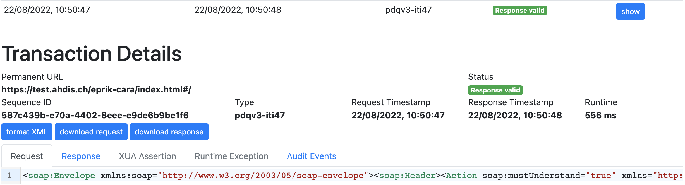

EPRIK Usecases
The EPRIK can help you speed up or test the development against the integration system:
- Use http(s) endpoints without the need to use client certificates
- Proxy functionality: See directly what you are sending to the integration system and receiving, including basic validation, this is available for SOAP webservices and ATNA Audit Events
- Use the IdP Assertion from EPRIK that you can get a XUA token from the STS (secure token service) to do document queries or publish documents
- Use the TCU Assertion from EPRIK that you can get a XUA token from the STS (secure token service) to publish a document via a technical user
http(s) endpoints without the need to use client certificates and proxy functionality
Adapt your webservice endpoints to the one provided in [eprik-config.md]. This allows you to use http or https endpoints without the need to use client certificates from the beginning and you can verify the if the different webservices are working.
To execute the examples you can either use curl or use the provided .http files if you have VSCode with the REST Client extension installed.
Demographics Query for GASSMANN:
curl --request POST \
--url https://test.ahdis.ch/eprik-cara/camel/cara/UPIProxy/services/PIXPDQV3ManagerService \
--header 'content-type: application/soap+xml;charset=UTF-8' \
--header 'user-agent: vscode-restclient' \
--data '<soap:Envelope xmlns:soap="http://www.w3.org/2003/05/soap-envelope"><soap:Header><Action soap:mustUnderstand="true" xmlns="http://www.w3.org/2005/08/addressing">urn:hl7-org:v3:PRPA_IN201305UV02</Action><MessageID xmlns="http://www.w3.org/2005/08/addressing">urn:uuid:88c76963-f467-49e2-a2c0-a772a4685ee3</MessageID><To xmlns="http://www.w3.org/2005/08/addressing">http://test.ahdis.ch/eprik-cara/services/iti47Endpoint</To><ReplyTo xmlns="http://www.w3.org/2005/08/addressing"><Address>http://www.w3.org/2005/08/addressing/anonymous</Address></ReplyTo></soap:Header><soap:Body><PRPA_IN201305UV02 xmlns="urn:hl7-org:v3" ITSVersion="XML_1.0"><id extension="1659464609650" root="1.3.6.1.4.1.21367.2017.2.1.104"/><creationTime value="20220822083241"/><interactionId extension="PRPA_IN201305UV02" root="2.16.840.1.113883.1.6"/><processingCode code="T"/><processingModeCode code="T"/><acceptAckCode code="AL"/><receiver typeCode="RCV"><device classCode="DEV" determinerCode="INSTANCE"><id root="2.16.756.5.30.1.191.1.0.12.1.101.2"/></device></receiver><sender typeCode="SND"><device classCode="DEV" determinerCode="INSTANCE"><id root="2.16.756.5.30.1.196.3.2.1"/></device></sender><controlActProcess classCode="CACT" moodCode="EVN"><code code="PRPA_TE201305UV02" displayName="2.16.840.1.113883.1.6"/><queryByParameter><queryId extension="1659464609651" root="1.3.6.1.4.1.21367.2017.2.1.104"/><statusCode code="new"/><responseModalityCode code="R"/><responsePriorityCode code="I"/><parameterList><livingSubjectName><value use="SRCH"><family>GASSMANN</family></value><semanticsText>LivingSubject.name</semanticsText></livingSubjectName></parameterList></queryByParameter></controlActProcess></PRPA_IN201305UV02></soap:Body></soap:Envelope>'
Proxy functionality
You can then search for the request on eprik-cara, it shows ALL requests/responses which happened today. You can also adjust the filter criteria. If you click on 'show' you see the details of the request:

If you click on 'format XML' it will pretty print the request / response (do not this for assertions which are signed when you wan't to reuse them). If you click on the 'Response' tab you get the response message. If an Assertion was provided you would see it in the 'Assertion tab'. If the request failed internally you will see additional information in the 'Runtime Exception' tab. The status 'Response valid' is the EPRIK internal validation of the request, it does not guarantee that the request is correct and accepted by the CARA integration system.
proxy ATNA messages
EPRIK offers an endpoint for unauthenticated transport receiver and sender according to rfc5425. The protocol requires that message length is sent first and then the other syslog parameters defined by ITI-20, see example.
2164 <85>1 2023-04-18T09:04:00.603Z matchbox.test - - IHE+RFC-3881 - <?xml version="1.0" encoding="UTF-8"?><AuditMessage> ...
with netcat the above message can be directly sent to eprik:
and is afterwards visible in eprik-cara atna example, see tab "headers" for detailed syslog protocol information.
Use the IdP Assertion from EPRIK
For document access you need to have an assertion which is based on a IdP token. EPRKIT allows you to get the IdP assertion which you can use for retrieving the SAML2 assertion token if your primary system is not integrated yet with the IdP.
Authenticate with your Identity Provider on the top right. If you are authenticated successfully you can add either add the IdP Token directly to your request or reference it it via the HTTP header (replace x-eprik-idp-assertion-id with value received after authenticating).
reference IdP Token with HTTP header:
curl --request POST \
--url https://test.ahdis.ch/eprik-cara/camel/cara/STS/services/SecurityTokenService \
--header 'content-type: application/soap+xml;charset=UTF-8' \
--header 'user-agent: vscode-restclient' \
--header 'x-eprik-idp-assertion-id: 4790' \
--data '<env:Envelope xmlns:env="http://www.w3.org/2003/05/soap-envelope"><env:Header xmlns:wsa="http://www.w3.org/2005/08/addressing"><wsa:Action>http://docs.oasis-open.org/ws-sx/ws-trust/200512/RST/Issue</wsa:Action><wsa:MessageID>6ed3440a-0164-49c4-b9d2-235422819e90</wsa:MessageID><wsse:Security xmlns:wsse="http://docs.oasis-open.org/wss/2004/01/oasis-200401-wss-wssecurity-secext-1.0.xsd"></wsse:Security></env:Header><env:Body><wst:RequestSecurityToken xmlns:wst="http://docs.oasis-open.org/ws-sx/ws-trust/200512"><wst:RequestType>http://docs.oasis-open.org/ws-sx/ws-trust/200512/Issue</wst:RequestType><wsp:AppliesTo xmlns:wsp="http://schemas.xmlsoap.org/ws/2004/09/policy"><wsa:EndpointReference xmlns:wsa="http://www.w3.org/2005/08/addressing"><wsa:Address>https://test.ahdis.ch/mag-cara</wsa:Address></wsa:EndpointReference></wsp:AppliesTo><wst:TokenType>http://docs.oasis-open.org/wss/oasis-wss-saml-token-profile-1.1#SAMLV2.0</wst:TokenType><wst:Claims Dialect="http://www.bag.admin.ch/epr/2017/annex/5/amendment/2"><saml2:Attribute xmlns:saml2="urn:oasis:names:tc:SAML:2.0:assertion" Name="urn:oasis:names:tc:xacml:2.0:resource:resource-id"><saml2:AttributeValue xmlns:xs="http://www.w3.org/2001/XMLSchema" xmlns:xsi="http://www.w3.org/2001/XMLSchema-instance" xsi:type="xs:string">761337613645876216^^^&2.16.756.5.30.1.127.3.10.3&ISO</saml2:AttributeValue></saml2:Attribute><saml2:Attribute xmlns:saml2="urn:oasis:names:tc:SAML:2.0:assertion" Name="urn:oasis:names:tc:xspa:1.0:subject:purposeofuse"><saml2:AttributeValue xmlns:xs="http://www.w3.org/2001/XMLSchema" xmlns:xsi="http://www.w3.org/2001/XMLSchema-instance" xsi:type="xs:anyType"><PurposeOfUse xmlns="urn:hl7-org:v3" code="NORM" codeSystem="2.16.756.5.30.1.127.3.10.5" codeSystemName="eHealth Suisse Verwendungszweck" displayName="Normal Access" xsi:type="CE"/></saml2:AttributeValue></saml2:Attribute><saml2:Attribute xmlns:saml2="urn:oasis:names:tc:SAML:2.0:assertion" Name="urn:oasis:names:tc:xacml:2.0:subject:role" NameFormat="urn:oasis:names:tc:SAML:2.0:attrname-format:unspecified"><saml2:AttributeValue xmlns:xs="http://www.w3.org/2001/XMLSchema"><Role xmlns="urn:hl7-org:v3" code="HCP" codeSystem="2.16.756.5.30.1.127.3.10.6" codeSystemName="eHealth Suisse EPR Akteure" displayName="Healthcare professional" xmlns:xsi="http://www.w3.org/2001/XMLSchema-instance" xsi:type="CE"/></saml2:AttributeValue></saml2:Attribute></wst:Claims></wst:RequestSecurityToken></env:Body></env:Envelope>'
Danger
The IdP Token is valid only for 5 minutes, and you will have to close / reopen the browser, otherwise you will get back the same token which is not valid anymore for the STS